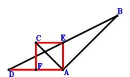
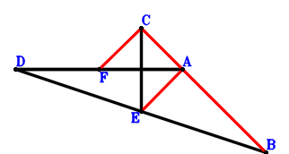
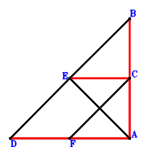
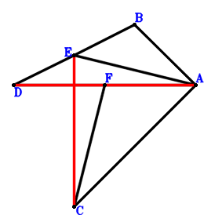

Exercise 1： Let F, E be the midpoints of DA, DB, respectively. CA⊥AB. Given that DA//CE and EA//CF, prove that \(CE·DA=2·CF·EA\).

\(\because \) E is the midpoint of DB \(\therefore \small\overrightarrow{AE}=\dfrac{\small\overrightarrow{AB}}{2} + \dfrac{\small\overrightarrow{AD}}{2}\).\(\because \) F is the midpoint of DA \(\therefore \small\overrightarrow{AF}=\dfrac{\small\overrightarrow{AD}}{2}\).\(\because \) CA⊥AB \( \therefore\small\overrightarrow{AB} \cdot \small\overrightarrow{AC}=0.\)In conclusion, \(\small\overrightarrow{CE} \cdot \small\overrightarrow{DA} + 2 \small\overrightarrow{EA} \cdot \small\overrightarrow{FC}=- \small\overrightarrow{AD} \cdot \left(- \small\overrightarrow{AC} + \small\overrightarrow{AE}\right) - 2 \small\overrightarrow{AE} \cdot \left(\small\overrightarrow{AC} - \small\overrightarrow{AF}\right)=- \small\overrightarrow{AD} \cdot \left(\dfrac{\small\overrightarrow{AB}}{2} - \small\overrightarrow{AC} + \dfrac{\small\overrightarrow{AD}}{2}\right) - 2 \left(\dfrac{\small\overrightarrow{AB}}{2} + \dfrac{\small\overrightarrow{AD}}{2}\right) \cdot \left(\small\overrightarrow{AC} - \dfrac{\small\overrightarrow{AD}}{2}\right)=- \small\overrightarrow{AB} \cdot \small\overrightarrow{AC}=0\)\(\because\) DA//CE and EA//CF \(\therefore\) \(CE·DA=2·CF·EA\).
Exercise 2： Let F, E be the midpoints of DA, DB, respectively. DA⊥CE. Given that C, A, B are collinear and EA//FC, prove that \(AB·CA=2·EA·FC\).

\(\because \) E is the midpoint of DB \(\therefore \small\overrightarrow{AE}=\dfrac{\small\overrightarrow{AB}}{2} + \dfrac{\small\overrightarrow{AD}}{2}\).\(\because \) F is the midpoint of DA \(\therefore \small\overrightarrow{AF}=\dfrac{\small\overrightarrow{AD}}{2}\).\(\because \) DA⊥CE \( \therefore\small\overrightarrow{CE} \cdot \small\overrightarrow{DA}=- \small\overrightarrow{AD} \cdot \left(- \small\overrightarrow{AC} + \small\overrightarrow{AE}\right)=- \small\overrightarrow{AD} \cdot \left(\dfrac{\small\overrightarrow{AB}}{2} - \small\overrightarrow{AC} + \dfrac{\small\overrightarrow{AD}}{2}\right)=- \dfrac{\small\overrightarrow{AB} \cdot \small\overrightarrow{AD}}{2} + \small\overrightarrow{AC} \cdot \small\overrightarrow{AD} - \dfrac{\small\overrightarrow{AD}^{2}}{2}=0.\)In conclusion, \(\small\overrightarrow{BA} \cdot \small\overrightarrow{CA} + 2 \small\overrightarrow{EA} \cdot \small\overrightarrow{FC}=\small\overrightarrow{AB} \cdot \small\overrightarrow{AC} - 2 \small\overrightarrow{AE} \cdot \left(\small\overrightarrow{AC} - \small\overrightarrow{AF}\right)=\small\overrightarrow{AB} \cdot \small\overrightarrow{AC} - 2 \left(\dfrac{\small\overrightarrow{AB}}{2} + \dfrac{\small\overrightarrow{AD}}{2}\right) \cdot \left(\small\overrightarrow{AC} - \dfrac{\small\overrightarrow{AD}}{2}\right)=\dfrac{\small\overrightarrow{AB} \cdot \small\overrightarrow{AD}}{2} - \small\overrightarrow{AC} \cdot \small\overrightarrow{AD} + \dfrac{\small\overrightarrow{AD}^{2}}{2}=0\)\(\because\) C, A, B are collinear and EA//FC \(\therefore\) \(AB·CA=2·EA·FC\).
Exercise 3： Let F, E be the midpoints of DA, DB, respectively. EA⊥FC. Given that B, C, A are collinear and DA//EC, prove that \(BA·CA=DA·EC\).

\(\because \) E is the midpoint of DB \(\therefore \small\overrightarrow{AE}=\dfrac{\small\overrightarrow{AB}}{2} + \dfrac{\small\overrightarrow{AD}}{2}\).\(\because \) F is the midpoint of DA \(\therefore \small\overrightarrow{AF}=\dfrac{\small\overrightarrow{AD}}{2}\).\(\because \) EA⊥FC \( \therefore\small\overrightarrow{EA} \cdot \small\overrightarrow{FC}=- \small\overrightarrow{AE} \cdot \left(\small\overrightarrow{AC} - \small\overrightarrow{AF}\right)=- \left(\dfrac{\small\overrightarrow{AB}}{2} + \dfrac{\small\overrightarrow{AD}}{2}\right) \cdot \left(\small\overrightarrow{AC} - \dfrac{\small\overrightarrow{AD}}{2}\right)=- \dfrac{\small\overrightarrow{AB} \cdot \small\overrightarrow{AC}}{2} + \dfrac{\small\overrightarrow{AB} \cdot \small\overrightarrow{AD}}{4} - \dfrac{\small\overrightarrow{AC} \cdot \small\overrightarrow{AD}}{2} + \dfrac{\small\overrightarrow{AD}^{2}}{4}=0.\)In conclusion, \(\small\overrightarrow{BA} \cdot \small\overrightarrow{CA} + \small\overrightarrow{CE} \cdot \small\overrightarrow{DA}=\small\overrightarrow{AB} \cdot \small\overrightarrow{AC} - \small\overrightarrow{AD} \cdot \left(- \small\overrightarrow{AC} + \small\overrightarrow{AE}\right)=\small\overrightarrow{AB} \cdot \small\overrightarrow{AC} - \small\overrightarrow{AD} \cdot \left(\dfrac{\small\overrightarrow{AB}}{2} - \small\overrightarrow{AC} + \dfrac{\small\overrightarrow{AD}}{2}\right)=\small\overrightarrow{AB} \cdot \small\overrightarrow{AC} - \dfrac{\small\overrightarrow{AB} \cdot \small\overrightarrow{AD}}{2} + \small\overrightarrow{AC} \cdot \small\overrightarrow{AD} - \dfrac{\small\overrightarrow{AD}^{2}}{2}=0\)\(\because\) B, C, A are collinear and DA//EC \(\therefore\) \(BA·CA=DA·EC\).
Exercise 4： Let E, F be the midpoints of BD, DA, respectively. EA⊥CF and BA⊥AC. Prove that DA⊥EC.

\(\because \) E is the midpoint of BD \(\therefore \small\overrightarrow{AE}=\dfrac{\small\overrightarrow{AB}}{2} + \dfrac{\small\overrightarrow{AD}}{2}\).\(\because \) F is the midpoint of DA \(\therefore \small\overrightarrow{AF}=\dfrac{\small\overrightarrow{AD}}{2}\).\(\because \) BA⊥AC \(\therefore \small\overrightarrow{AB} \cdot \small\overrightarrow{AC}=0\) . . . . . . \(①\)\(\because \) EA⊥CF \(\therefore \small\overrightarrow{EA} \cdot \small\overrightarrow{FC}=- \small\overrightarrow{AE} \cdot \left(\small\overrightarrow{AC} - \small\overrightarrow{AF}\right)=- \left(\dfrac{\small\overrightarrow{AB}}{2} + \dfrac{\small\overrightarrow{AD}}{2}\right) \cdot \left(\small\overrightarrow{AC} - \dfrac{\small\overrightarrow{AD}}{2}\right)=- \dfrac{\small\overrightarrow{AB} \cdot \small\overrightarrow{AC}}{2} + \dfrac{\small\overrightarrow{AB} \cdot \small\overrightarrow{AD}}{4} - \dfrac{\small\overrightarrow{AC} \cdot \small\overrightarrow{AD}}{2} + \dfrac{\small\overrightarrow{AD}^{2}}{4}=0\) . . . . . . \(②\)In conclusion, \(\small\overrightarrow{CE} \cdot \small\overrightarrow{DA}=- \small\overrightarrow{AD} \cdot \left(- \small\overrightarrow{AC} + \small\overrightarrow{AE}\right)=- \small\overrightarrow{AD} \cdot \left(\dfrac{\small\overrightarrow{AB}}{2} - \small\overrightarrow{AC} + \dfrac{\small\overrightarrow{AD}}{2}\right)=- \dfrac{\small\overrightarrow{AB} \cdot \small\overrightarrow{AD}}{2} + \small\overrightarrow{AC} \cdot \small\overrightarrow{AD} - \dfrac{\small\overrightarrow{AD}^{2}}{2}=-①-2\cdot②=0\), that is, DA⊥EC.